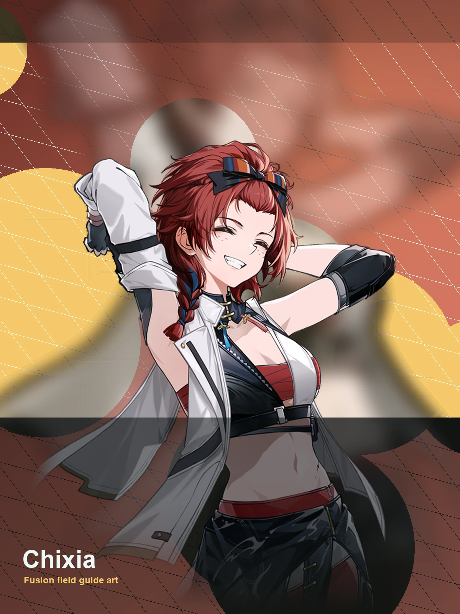

WaveKit
WaveKit

Wuthering Waves Resonator guide
Chixia build, teams, weapons, and Echoes
Simple ranged carry for early accounts.
Skill priority
Team compositions
 MDPSChixia
MDPSChixia HelperChangli
HelperChangli SupportShorekeeper
MDPSChixia
SupportShorekeeper
MDPSChixia HelperBrant
HelperBrant SupportVerina
MDPSChixia
SupportVerina
MDPSChixia HelperMortefi
HelperMortefi SupportBaizhi
SupportBaizhi
Chixia guide overview
Chixia is a Fusion main dps in Wuthering Waves. This WaveKit guide focuses on the practical build choices most players need first: weapon options, Sonata and Echo setup, stat priority, simple rotation notes, and team shells that make sense for real accounts.
Quick build
- Role
- Main DPS
- Team type
- Fusion Ranged
- Best weapon
- The Last Dance
- Alternate weapons
- Static Mist / Thunderbolt / Novaburst
- Sonata
- Molten Rift
- Echo cost
- 4-3-3-1-1
- Main Echo
- Nightmare: Inferno Rider
- Main stats
- CRIT DMG or CRIT Rate / Fusion DMG / ATK%
Stat priority
- CRIT Rate / CRIT DMG balance
- Fusion DMG or ATK%
- ATK% or HP% if the kit scales that way
- Energy Regen only if the rotation needs it
Team direction
Chixia is a simple ranged carry; keep teams readable and safe.
Useful teammates
Simple play pattern
- Set up both teammates before giving Chixia the main damage window.
- Use the listed Sonata and main Echo as the first build target, then improve substats slowly.
- If the team feels stressful, use the helper to choose a real healer or safer third slot.
Build priority
- Difficulty
- Beginner friendly
- Safety
- Bring a healer if learning
- Data note
- Guide checked
Chixia can work well, but build priority depends heavily on your owned teammates and weapons.
Chixia FAQ
What is the best Chixia build in Wuthering Waves?
Chixia's recommended WaveKit setup is Fusion DPS Build, using The Last Dance, Molten Rift, and Nightmare: Inferno Rider as the main Echo target.
What stats should Chixia use?
Start with CRIT DMG or CRIT Rate / Fusion DMG / ATK%. If the rotation feels uncomfortable, improve Energy Regen or defensive comfort before chasing perfect substats.
What teams work with Chixia?
A strong reference shell is Chixia / Changli / Shorekeeper. WaveKit can also suggest owned alternatives through the team helper.
Is Chixia beginner friendly?
Chixia's current difficulty is listed as Beginner friendly. If you are learning, pair them with safer sustain or defensive support.